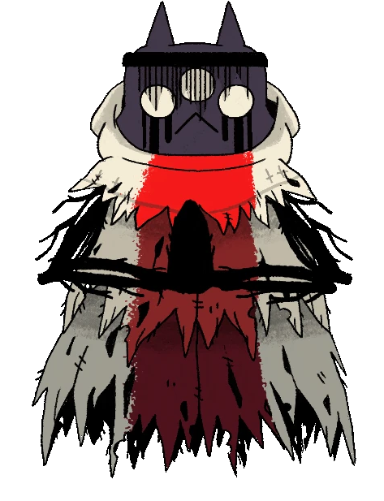

The One Who Waits
A demonic cat who was the third oldest of his siblings, who found the red crown, turned into the god of death. He rose to power with his siblings helping defeat the old gods in the times before. After having ideas of change - dispite being the only sibling over a constant force - from his eldest sibling Shamura, the god fought his siblings. He lost, not before wounding his siblings, and was punished by being sealed in his own realm of death in chains with his two disciples. Where he seeks revenge against them using what little power he has to send vessels with the red crown to defeat them and free him, none of succeeded; however, one fateful day a lamb is sent to his realm, the last one, who may turn the tides.
Once able to wield chains against those who oppose him, he stands trapped in chains ever similar. A seeming slap in the face. While he may fight at a distance, do not assume him weak, his rings of fire are deadly. He can be defeated, though watch out if he falls to the ground that is when the fight truly begins. His siblings couldn't even truly defeat him, only able to bind him in chains in his own realm, to their own great loss and injury, after all, death is undefeatable… Right?